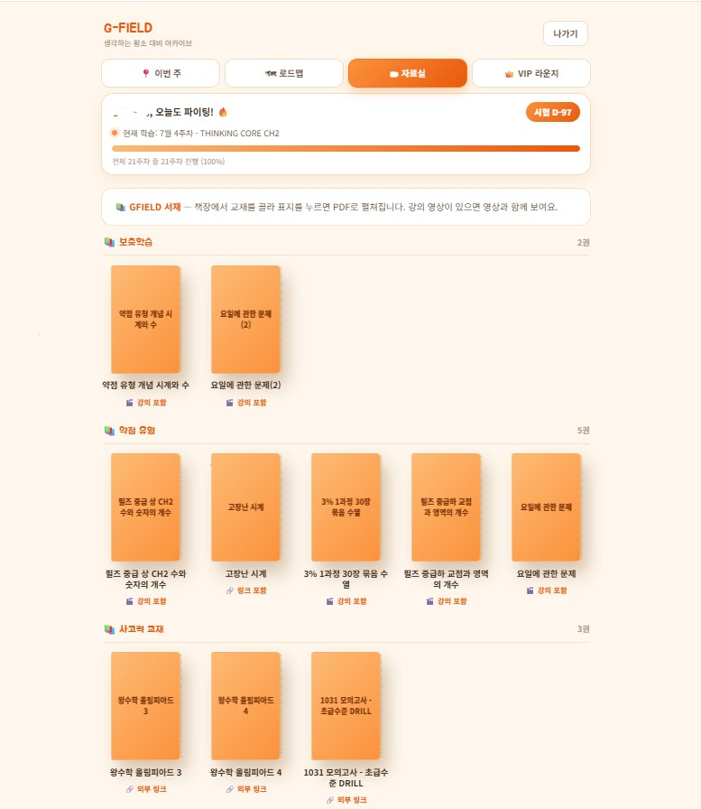

2026년 생각하는 황소
초등 선발 분석
및 대비 방법
발표된 결과와 실제 문항으로 살펴봅니다.
독쌤 · 학부모 설명회결과 분석 / 기출 유형 / 학습 계획
어려웠다는 말 다음에,
문제를 보겠습니다.
어디서 시작할지 보이는 문제도 많았습니다.
조건을 놓치지 않고, 끝까지 정확하게 푸는 힘.
문항을 살펴본 강사의 해석입니다. 시험의 체감 난도와 구분해 이야기하겠습니다.
올해 성적분포
반별 기준 점수와 학년별 분포를 함께 보겠습니다.
사용자 제공 성적분포표 기준 · 원본 표제: 2026년 12월 초등과정 입학시험 성적분포
응시 인원은 작년과 비슷합니다.
| 응시 집단 | 작년 | 올해 | 변화 |
|---|---|---|---|
| 전국 전체 | 9,150명 | 9,128명 | -22명 |
| 전국 초2 | 4,116명 | 4,169명 | +53명 |
| 전국 초3 | 5,035명 | 4,959명 | -76명 |
| 대치 | 1,421명 | 1,247명 | -174명 |
작년 전략 설명회 자료와 올해 제공 표 비교. 작년 학년별 합계는 전체 표기와 1명 차이가 있어 원문 값을 유지했습니다.
반별 기준 점수는 낮아졌습니다.
| 반 | 작년 | 올해 | 변화 |
|---|---|---|---|
| 경시 | 46.1 | 36.0 | −10.1 |
| 심화 | 38.0 | 29.1 | −8.9 |
| 실력 | 30.1 | 23.0 | −7.1 |
| 일품 | 21.0 | 15.0 | −6.0 |
올해 평균 · 점
전국 초212.79
전국 초314.59
대치 전체15.19
작년 평균은 제공 자료에서 확인되지 않았습니다.
단위: 점 · 컷의 변화만으로 문항별 난도나 하락 원인을 단정하지 않습니다.
올해 전국 상위 6명,
대치 초2 학생들입니다.
6명
성적표에서 확인한 결과
전국 1~6위 구간의 대치·초2·전체 석차가 일치합니다.
수업에서 관찰한 준비 과정
방학 전부터 집중해서 공부하고,
복습할 시간을 확보한 학생들이 있었습니다.
상위 6명은 성적표에서 산출. 준비 시기에 관한 내용은 원장의 지도 경험이며 인과관계를 입증한 통계는 아닙니다.
모습이 바뀌어도,
다시 쓰는 생각이 있습니다.
| 살펴볼 힘 | 작년 대표 사례 | 올해 복기 문항 |
|---|---|---|
| 빠뜨리지 않고 세기 | 슬리퍼 · 섬의 개구리 · 겹친 숫자 | 정육각형 · 금액표 |
| 선을 따라가기 | 강아지 목줄 | 매듭 · 실 자르기 · 성냥개비 |
| 수의 관계 찾기 | 도형 속 수의 합 · 나머지 | 수 배열 · 마방진 · 주머니 |
| 변화 기록하기 | 문자 배열 · 시계 | 원형 지우기 · 벌레 · 원의 교점 |
작년 설명회에 실린 사례와 올해 학생 복기를 비교한 유형 분석입니다.
계산 다음에,
무엇을 쓰라고 했을까요?
수를 구하기
계산한 값과 단위를 씁니다.
영역 표시하기
조건에 맞는 칸의 테두리를 표시합니다.
기호로 나타내기
계산한 수를 약속된 기호로 그립니다.
실을 당기면, 어느 고리가 남을까요?
한쪽 끝에서 출발해
같은 실을 따라갑니다.
교차점에서
다른 선으로 갈아타지 않습니다.
고리를 살필 때
끝이 고리 안으로 어떻게 지나갔는지 봅니다.
다시 확인할 때
실제로 끈을 놓고 당겨 봅니다.
교차한 횟수만으로 매듭을 판단할 수는 없습니다.
많은 숫자 속에서, 아홉 칸을 봅니다.
자릿값을 식으로 옮기면
수가 커져도, 한 줄의 합은 같습니다.
불은 여러 방향으로 동시에 번집니다.
“실수했어”에서
한 걸음 더 들어갑니다.
선을 잘못 따라갔다면교차점에서의 판단
합이 다르게 나왔다면선택한 칸과 계산
식을 다르게 세웠다면읽는 방향과 자릿값
다 구하고도 틀렸다면물은 것과 답의 형식
복기한 22문항을 함께 보겠습니다.
문제집 PDF 열기 ↗학생 복기와 제공 자료를 토대로 정리한 22문항
혼자 풀 수 있는지,
다시 확인합니다.
혼자 풀었던 문제
조건과 풀이를 설명할 수 있나요?
설명을 듣고 푼 문제
다음 날 빈 종이에서 시작할 수 있나요?
다시 틀린 문제
어느 조건에서 판단이 달라졌나요?
배운 것을 다시 풀 시간을 잡습니다.
시간과 막힌 지점을 기록
놓친 조건 한 곳을 찾기
설명 없이 처음부터 풀기
모의고사 결과를 보고,
다음 주에 연습할 유형을 고릅니다.
방학 전부터,
꾸준히 생각할 시간을.
기본 개념과 계산
설명할 수 있는 수준에서 시작
복습과 낯선 유형
같은 생각을 다른 문제에 적용
시간 안에서 판단
풀 순서 · 답 쓰기 · 다시 확인
학생의 현재 수준과 확보할 수 있는 학습 시간에 맞춰 조정합니다.
몇 권을 끝냈는지보다,
어디까지 스스로 하는지.
1031
필즈
올림피아드
필즈
올림피아드
몇 문제를 먼저 풀어 봅니다.
풀이를 보기 전에 어디까지 했는지
조건을 자기 말로 설명하는지
숫자가 바뀌어도 다시 푸는지
그 결과로 교재와 단계를 정합니다.
“여기까지 어떻게 생각했는지
알려 줄래?”
아이의 풀이를 먼저 듣습니다.
빠뜨린 조건을 다시 보게 합니다.
마지막으로 답의 형식을 확인합니다.
시험 한 번 뒤에,
고친 방법 하나를 남깁니다.
맞힌 문제에서도
설명이 불안한 유형을 찾고
맞힌 이유를 스스로 말해 봅니다.
틀린 문제에서는
놓친 조건을 고쳐서
숫자가 달라진 문제에 다시 써봅니다.
다음 시험에서는 지난번에 고친 방법을 사용해 봅니다.
푼 뒤 끝내지 않고,
필요한 유형을 다시 연습합니다.
승인받은 회차의 자료를 열고,
문제 · 해설 · 학습 영상을 이어 봅니다.
실전 연습타이머
학습 기록정오답 입력 · 분석
다시 풀기유형별 문제은행

회원의 승인 범위와 회차에 따라 제공되는 기능이 다릅니다.
이번에 연습할 문제를 골라
우리 아이의 시험지로.
선택여러 회차
→여러 회차
영역 · 세부 유형
조정틀린 문제 · 승인 전체
→틀린 문제 · 승인 전체
난이도 · 10 / 20 / 30문항
출력시험지 PDF
시험지 PDF
풀이 PDF
필요한 만큼 풀고, 고친 부분을 확인합니다.
황소 아카이브 열기 ↗반 이름과 함께,
앞으로의 공부를 봅니다.
학습 시간
수업과 과제를 할 시간을 확보합니다.
교과 공부
기본 개념을 이어갈 계획을 세웁니다.
다음 확인
부족한 부분을 다시 풀어 봅니다.
방법을 스스로 찾고,
끝까지 정확하게.
2월 시험과 다음 선발 시험을 함께 준비하겠습니다.
질문을 받겠습니다.독쌤 · 지필드 영재교육